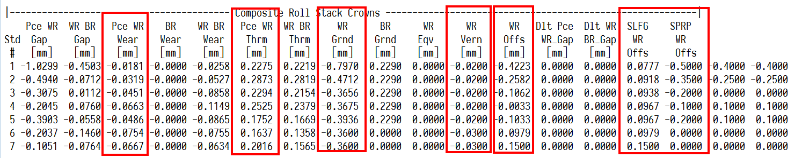
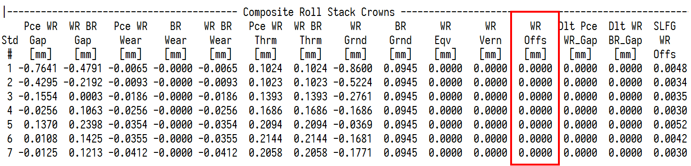
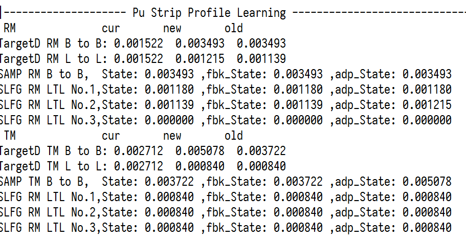
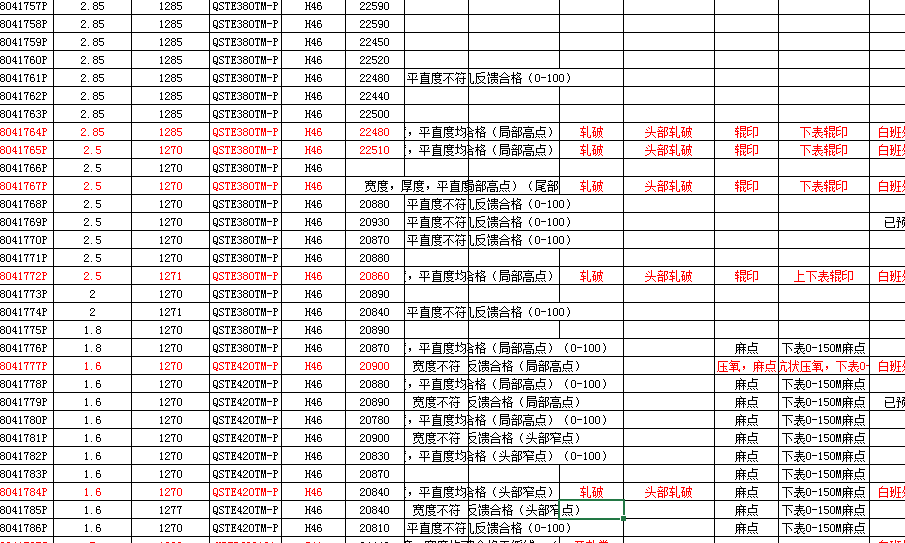
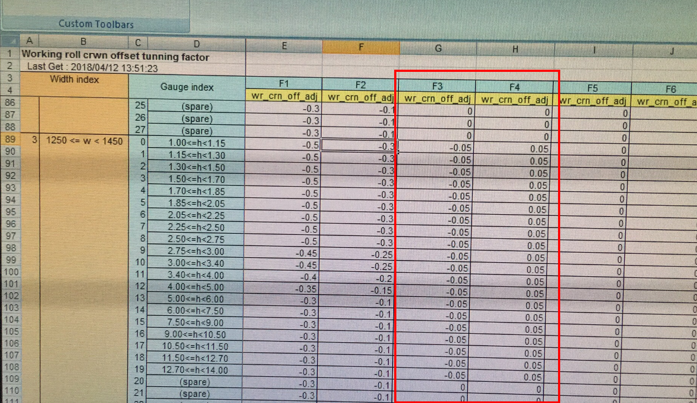
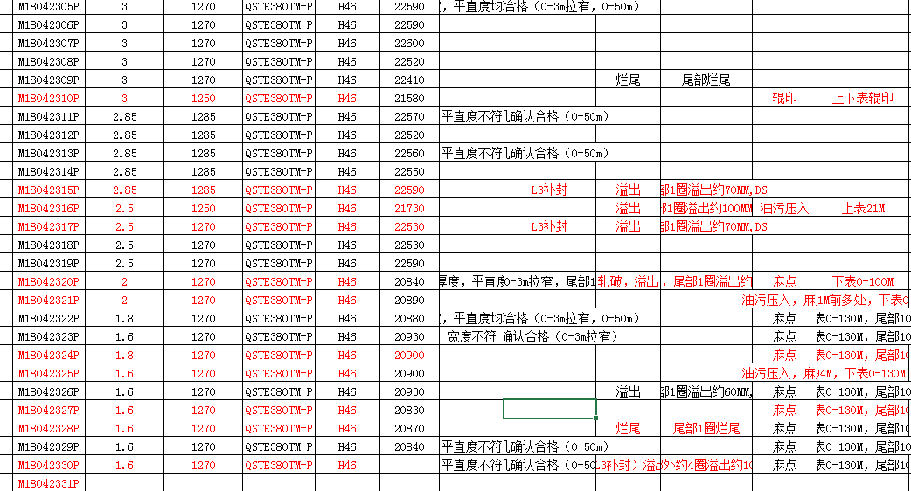
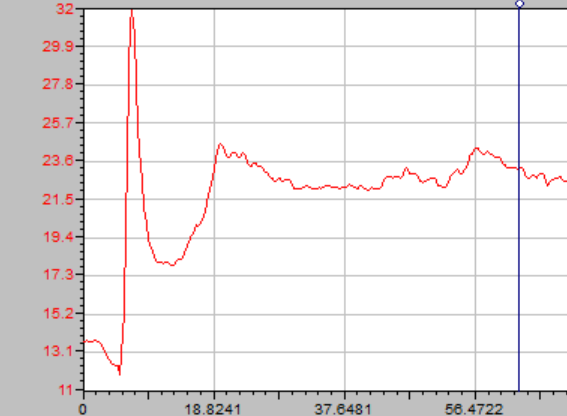
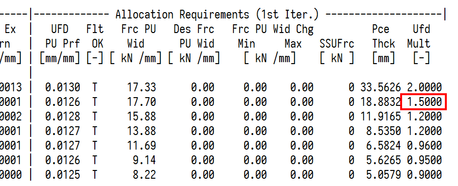
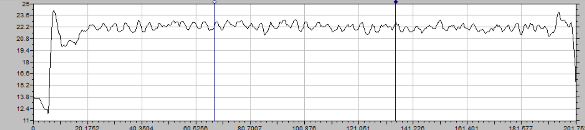

机架间对称浪形调整方式¶
两条产线板形模型差异¶
2250和1580板形模型之间存在差异。主要差异在于凸度设定方面。
1580产线的工作辊辊系凸度由轧辊磨损、轧辊热胀、CVC等效凸度、辊系自学习、工作辊凸度补偿组成。

2250产线的工作辊辊系凸度由轧辊磨损、轧辊热胀、CVC等效凸度、工作辊系自学习组成。工作辊凸度补偿不投用。如下图所示工作辊凸度补偿为0mm。

工作辊凸度补偿包含基准的调整值和SLFG补偿，作用是用来修正凸度分配的精度。2250产线的工作辊凸度补偿不投用，2250产线的凸度如何保证精度呢？
2250产线的板形模型多了一个比例凸度的自学习。
2250板形模型的特别之处¶
2250比例凸度的自学习是TMEIC相对于3代系统新增的自学习功能。投用不投用的开关是crlc_enable_pu_prf_off指示器。

2250板形模型自学习方面新增函数cTargtD::Prf_Adpt_Pass(..),在此函数中，分别按短期（short）和长期（long）、重计算和测量凸度的偏差（RM）、PDI凸度和测量凸度的偏差（TM），建立四种单位凸度的补偿值。
在cTargtD::Prf_Adpt_Pass(..)中，prf_int通过长短期单位凸度自学习进行修正。
1 2 3 4 5 6 | if (this->pcTargt->tm_or_rm_sel_flag == false ) { prf_int = prf_int * matl_exp_cof + ( this->s_pu_prf_off_rm_old + this->l_pu_prf_off_rm_old ) * pce_thck; } else { prf_int = prf_int * matl_exp_cof + ( this->s_pu_prf_off_tm_old + this->l_pu_prf_off_tm_old ) * pce_thck; } |
注意凸度目标
注意这里修正的是prf_int，即对目标凸度进行修正。
机架间出现浪形，如何通过调整凸度分配修正浪形呢？
两条产线修正机架间凸度分配方式¶
1580产线调整方式¶
1580产线是通过调整F1到F7的凸度补偿进行修正，在SPRP即CTOOL中有调整手段wr_crn_off_adj，表面上补偿到长期辊系凸度补偿自学习上（长期辊系凸度补偿的自学习开关为wr_crn_off_sel_flag），实际修正了整个带钢-凸度辊系凸度，对各个机架的凸度分配产生直接影响。
如下代码中的wr_cr_off。
1 2 3 4 5 6 7 8 | pce_wr_cr = ( pce_wr_t_cr + pce_wr_w_cr + pce_wr_t_w_cr + wr_eqv_cr + wr_grn_cr + wr_cr_vrn + wr_cr_off ); |
2250产线调整方式¶
2250可通过调整各个机架的UFD调整系数ufd_modifier来“即时”修正各个机架的凸度分配。
如下代码所示，ufd_modifier在计算带钢-工作辊辊系凸度时，是作为除数存在的。也就是说，调大ufd_modifier，带钢-工作辊辊系凸度变小；调小ufd_modifier，带钢-工作辊辊系凸度变大。
1 2 3 4 5 6 7 8 9 10 11 12 13 14 15 16 17 18 19 20 21 22 23 24 25 26 27 28 29 30 31 32 33 | float cUFDD::Pce_WR_Crn( const float ufd_prf, // [mm_mm_in] UFD roll gap profile const float force_pu_wid, // [kn/mm_mton/mm_eton/in] rolling // force per unit piece width const float force_bnd, // [kn_mton_eton] roll bending force const float wr_br_crn // [mm_mm_in] work roll to backup // roll stack crown ) const // [mm_mm_in] piece to work roll // stack crown { // Begin of PCE_WR_CRN function return ( ufd_prf / ufd_modifier - b_cof[ 0 ] * force_pu_wid - b_cof[ 1 ] * pow( force_pu_wid, float(1.5) ) - b_cof[ 3 ] * wr_br_crn * force_pu_wid - b_cof[ 4 ] * wr_br_crn * pow( force_pu_wid, float(1.5) ) - b_cof[ 5 ] * force_bnd - b_cof[ 6 ] * force_bnd * force_pu_wid - b_cof[ 7 ] * force_bnd * pow( force_pu_wid, float(2.0) ) - b_cof[ 8 ] * wr_br_crn - b_cof[ 9 ] * force_pu_wid - b_cof[ 10 ] * force_bnd - b_cof[ 11 ] * force_pu_wid - b_cof[ 12 ] * pow( force_pu_wid, float(1.5) ) - b_cof[ 13 ] * force_bnd - b_cof[ 16 ] - b_cof[ 17 ] ) / ( b_cof[ 2 ] + b_cof[ 14 ] + b_cof[ 15 ] ); } // End of PCE_WR_CRN function |
2250产线包络线计算的迭代部分被全部掐掉，实际放大了UFD调整系数的作用。
调整机架间凸度分配的实战¶
1580产线通过凸度补偿修正凸度分配案例¶
2018年4月11日白班生产的一批次QSTE系列薄规格酸洗板，F3和F4双边浪、F7出口中浪，生产不稳定浪出现批量轧破。

4月12日再次生产薄规格QSTE系列酸洗板时，模型组调整了F3和F4的凸度补偿调整系数。将F3的补偿值由原先的0mm调整成-0.05mm，F4的补偿值由原先的0.1mm调整成0.05mm。如下图所示。

等于是修正F3、F4的凸度，使得F3、F4凸度降低，CVC窜辊相对（原计算值）正窜。使得出口中浪得到修正。12日生产的这批次QSTE系列酸洗板生产稳定，无头部轧破，如下质检报表所示。

2250产线通过UFD调整系数修正凸度分配案例¶
4月16日生产的Q450NQR1，规格5*1375mm，生产过程中带钢在F3和F4出现起套较高的问题，最大抬套角度甚至达到32度。

调查发现F4到F7后机架存在明显中浪。
4月17日生产同规格的Q450NQR1（5*1375mm）时遂进行试验。试验前Q450NQR1同规格F7出口的确存在明显中浪。

遂调整F2的UFD系数，从1.2调整为1.5，F2窜辊由18.92mm提升到45.62，加上操作工自身对中浪的补偿，后面生产的同钢种同规格无中浪。活套角度正常，最大抬套角度不超过25度。
